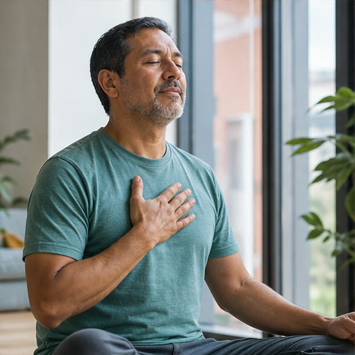

Nutrición
Alimentación equilibrada, decisiones conscientes y hábitos posibles para cada día.
Ver contenidoEducación y prevención para vivir mejor
Información confiable, educación práctica y recursos de bienestar para ayudarte a tomar mejores decisiones para tu salud y calidad de vida.

Nuestro propósito
El IDB nace para acercar información confiable y educación práctica a personas, familias y cuidadores. Promovemos una cultura de prevención que ayude a comprender mejor la salud, incorporar hábitos sostenibles y tomar decisiones con mayor seguridad.
Nuestra mirada integra bienestar físico, emocional y social, con especial atención a la calidad de vida y al envejecimiento saludable.
Bienestar integral
Explora contenidos prácticos organizados alrededor de hábitos y decisiones que acompañan cada etapa de la vida.
Alimentación equilibrada, decisiones conscientes y hábitos posibles para cada día.
Ver contenidoMovimiento seguro, progresivo y adaptable a diferentes condiciones y etapas.
Ver contenido
Recursos para comprender emociones, regular la tensión y buscar apoyo.
Ver contenidoInformación para identificar riesgos, observar señales y actuar oportunamente.
Ver contenidoBiblioteca médica destacada
Áreas educativas en preparación para consultar conceptos esenciales, prevención, hábitos y señales que requieren orientación profesional.
Conceptos básicos, prevención, alimentación y seguimiento de hábitos.
Información educativa sobre presión arterial, riesgos y autocuidado.
Hábitos y conocimientos para cuidar el corazón y la circulación.
Alimentación equilibrada y criterios para tomar mejores decisiones.
Descanso, recuperación y prácticas para mejorar la rutina nocturna.
Educación emocional, prevención y orientación para buscar ayuda.
Orientación digital
VITA te ayuda a encontrar información, recursos y contenidos educativos relacionados con bienestar, prevención y calidad de vida.
Consultar a VITAExplora información educativa, conoce nuestros recursos y encuentra un punto de partida para cuidar tu bienestar.